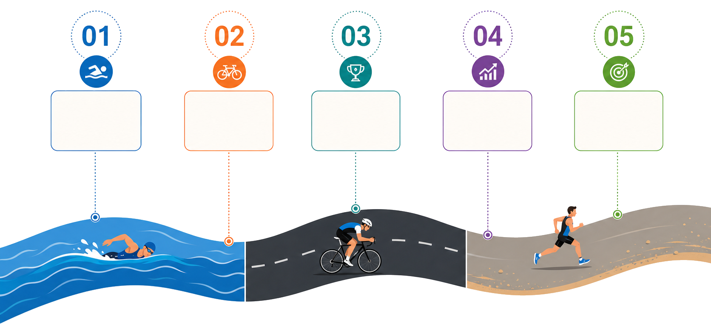

Digital
Präsenz auf der Website, im Newsfeed und in Social Updates rund um Training, Rennen und Vorbereitung.

David Simon · Kona 2026
Ein regionaler Amateur-Triathlet auf dem Weg zur IRONMAN Weltmeisterschaft. Werden Sie Partner einer sportlichen Reise mit Haltung, Leistung und Sichtbarkeit.
Davids Profil
David Simon ist Amateur-Triathlet aus Büchel, Polizeibeamter und Athlet des RSC Untermosel. Seine Geschichte verbindet sportliche Leistung mit Alltag, Disziplin und regionaler Bodenhaftung.
Für Sponsoren entsteht daraus ein glaubwürdiges Umfeld: ein Athlet mit klarer Haltung, greifbarem Ziel und einer Reise, die auch außerhalb der Triathlon-Szene verstanden wird.
Erfolge
Partner werden
Die Partnerschaft wird individuell gedacht: passend zum Unternehmen, zur Region und zu den Geschichten, die auf dem Weg nach Hawaii entstehen. Im Mittelpunkt stehen Werte, die Sponsoren glaubhaft mittragen können.
Präsenz auf der Website, im Newsfeed und in Social Updates rund um Training, Rennen und Vorbereitung.
Sichtbarkeit auf Wettkampf- und Trainingskleidung, bei regionalen Starts und im direkten Umfeld der Vorbereitung.
Anknüpfungspunkte für Presse, lokale Events und Kommunikation mit einer Geschichte aus der Region.
Content und Updates aus der finalen Phase bis zum Renntag auf Hawaii, inklusive emotionalem Höhepunkt.
Roadmap

Regionaler Auftritt vor heimischem Publikum.
Formaufbau, Ausrüstung und Partner-Updates.
Diagnostik, Belastung und gezielte Vorbereitung.
Content, Presse und Präsenz vor Ort.
Der Renntag auf der größten Triathlon-Bühne.
Arbeitsstand: Die Roadmap nutzt aktuell ein eingefügtes Canva-Visual. Die Kästchen sind als editierbare Website-Texte angelegt und können später durch ein finales Bild oder eine Animation ersetzt werden.
Social Media & Sponsoren
Nähe zur Vorbereitung, Raum für Partner.
Sobald ein Hauptpartner feststeht, kann dieser Bereich prominent mit Logo, kurzer Einordnung und Link zum Unternehmen genutzt werden.